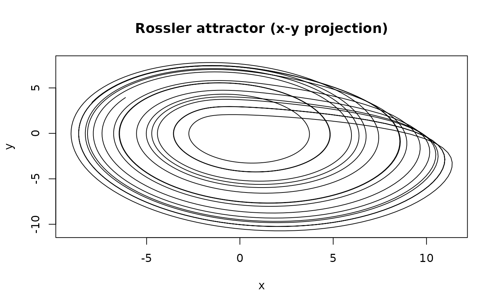

Integrates the three-dimensional Rossler system (Otto Rossler, 1976), a continuous-time chaotic flow built from a single quadratic nonlinearity. With the standard parameters (\(a = 0.2\), \(b = 0.2\), \(c = 5.7\)) the trajectory traces out the spiral-and-fold Rossler attractor.
Usage
simulate_rossler(
t_max = 200,
dt = 0.05,
x0 = 0,
y0 = 1,
z0 = 0,
a = 0.2,
b = 0.2,
c = 5.7,
transient = 0
)Arguments
- t_max
Numeric. Total integration time after any
transient.- dt
Numeric. Integration step size.
- x0, y0, z0
Numeric. Initial conditions.
- a, b, c
Numeric. Rossler parameters. Defaults are the standard chaotic regime.
- transient
Numeric (\(\ge 0\)). Integration time discarded from the start of the trajectory.
Details
The system is $$\dot{x} = -(y + z),$$ $$\dot{y} = x + a y,$$ $$\dot{z} = b + z (x - c).$$
Compared with Lorenz, the Rossler attractor evolves on a slower timescale,
which is why t_max defaults to 200 and dt to
0.05.
References
Rossler, O. E. (1976). An equation for continuous chaos. *Physics Letters A*, 57(5), 397-398. doi:10.1016/0375-9601(76)90101-8
See also
[simulate_lorenz()], [simulate_duffing()].
Other simulation functions:
simulate_duffing(),
simulate_ikeda_map(),
simulate_logistic_map(),
simulate_lorenz(),
simulate_mackey_glass(),
simulate_standard_map()
Examples
traj <- simulate_rossler(t_max = 100, dt = 0.05, transient = 20)
plot(traj$x, traj$y, type = "l", xlab = "x", ylab = "y",
main = "Rossler attractor (x-y projection)")
